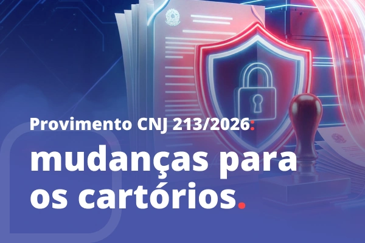
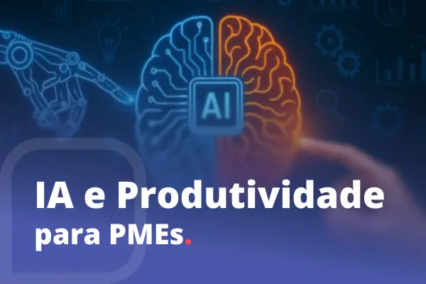
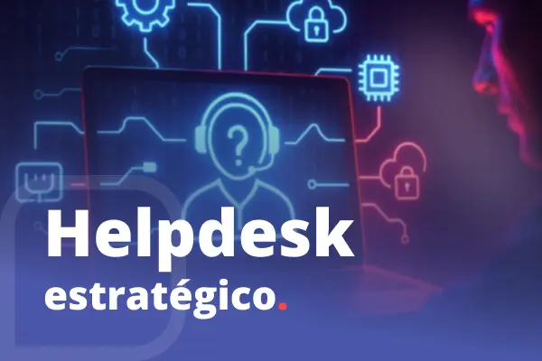
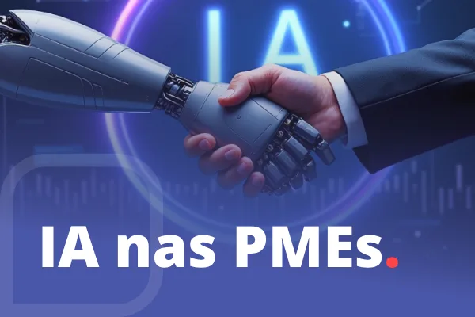
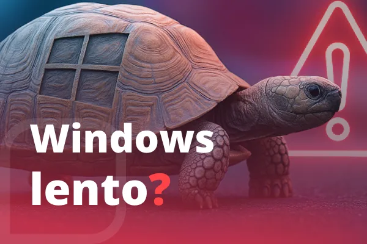
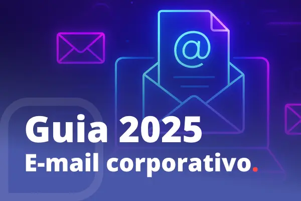
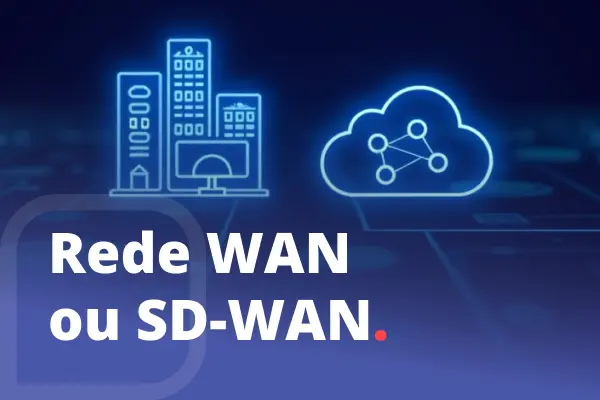
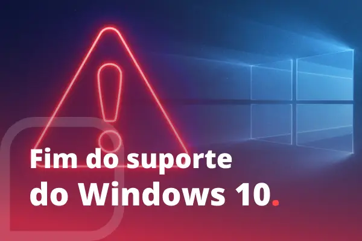
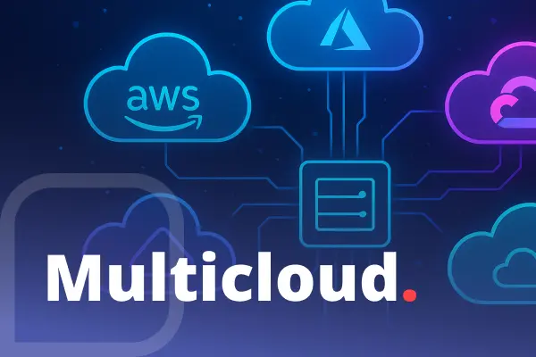
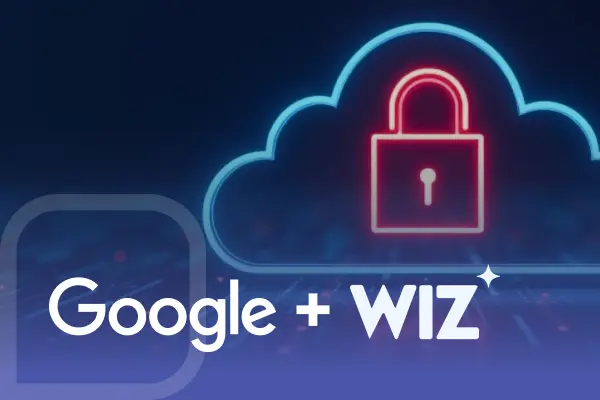

Informações úteis e confiáveis para ajudar você a tomar decisões de TI para o seu negócio.
















Nosso time ajuda a transformar essas dicas em decisões práticas para o seu negócio.